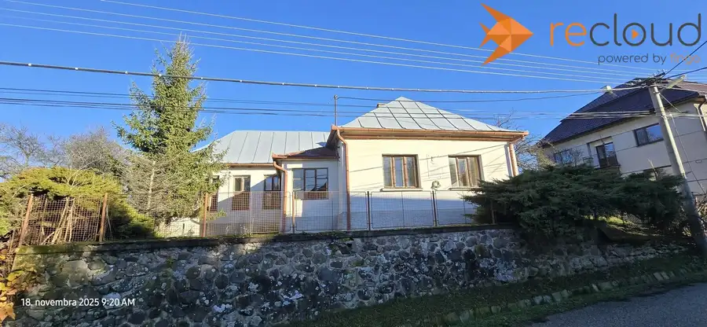
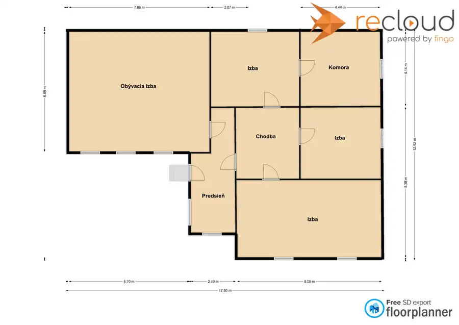

Dom v obci Horné Zahorany na predaj
Horné Zahorany


- Plocha167 m²
- StavPôvodný stav
- VlastníctvoIné
O nehnuteľnosti
Na predaj: Dom v obci Horné ZahoranyLokalita: Horné Zahorany, 11km od mesta Rimavská Sobota, Banskobystrický kraj, SlovenskoCena: 71 100 € / dohodouPopis: Ponúkame na predaj dom v tichej a vyhľadávanej obci Horné Zahorany. Dom bol v minulosti využívaný ako cirkevná škola. Je vhodný na rekonštrukciu za účelom bývania alebo ako chalupa.Vlastnosti:•Rozloha: samotný dom má plochu 177,26 m2 ,celkový pozemok 4620 m2 z toho záhrada 3872m2, zastavaná plocha 748 m2 •Počet izieb: celkový počet izieb je 5, jedna predsieň a chodba•Inžinierske siete : Rozvody elektriny sú pôvodné, na pozemku je vlastná studňaVýhody:•Tichá a bezpečná lokalita obklopená lesmi•Blízkosť okresného mesta Rimavská Sobota•Rôznorodá možnosť využitia veľkej záhrady.Občianska vybavenosť: •Obec Horné Zahorany ponúka dobrú občiansku vybavenosť – nájdete tu kultúrny dom, kostol, obchody s potravinami, autobusovú zastávku. •Obcou prechádza červená turistická trasa 0805.•Neďaleko obce sa nachádza rozhľadňa Maginhrad.V prípade záujmu je možné odpredať iba časť záhrady. V tom prípade sa celková predajná cena zníži.Kontakt: Pre viac informácií alebo dohodnutie obhliadky nás kontaktujte na telefónnom čísle 0908 944 176 alebo e-mailom na ondrej.bystriansky@recloudpartner.sk
Parametre
- Druh
- Rodinný dom
- Druh domu
- Klasický dom
- Dátum zverejnenia
- 21. 11. 2025
- Energetický certifikát budovy
- nie je
- Orientácia
- Južná
- Plocha pozemku
- 4620 m²
- Počet nadzemných podlaží
- 1
- Rok výstavby
- 1930
- Stav nehnuteľnosti
- Pôvodný stav
- Terén pozemku
- Iný
- Typ
- Predaj
- Typ konštrukcie
- Zmiešaná
- Vlastníctvo
- Iné
- Zariadenie
- Nezariadené
- Zastavaná plocha
- 177.26 m²
- Úžitková plocha
- 167 m²